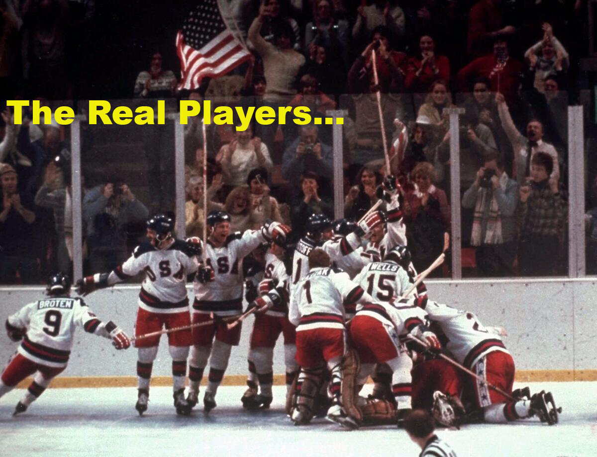
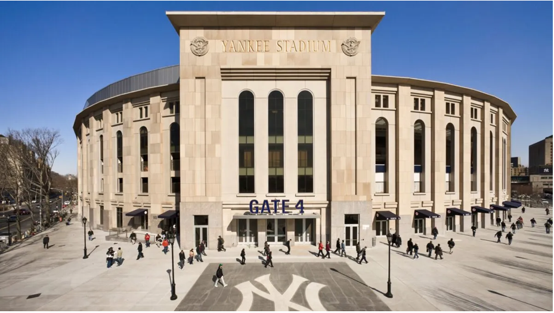
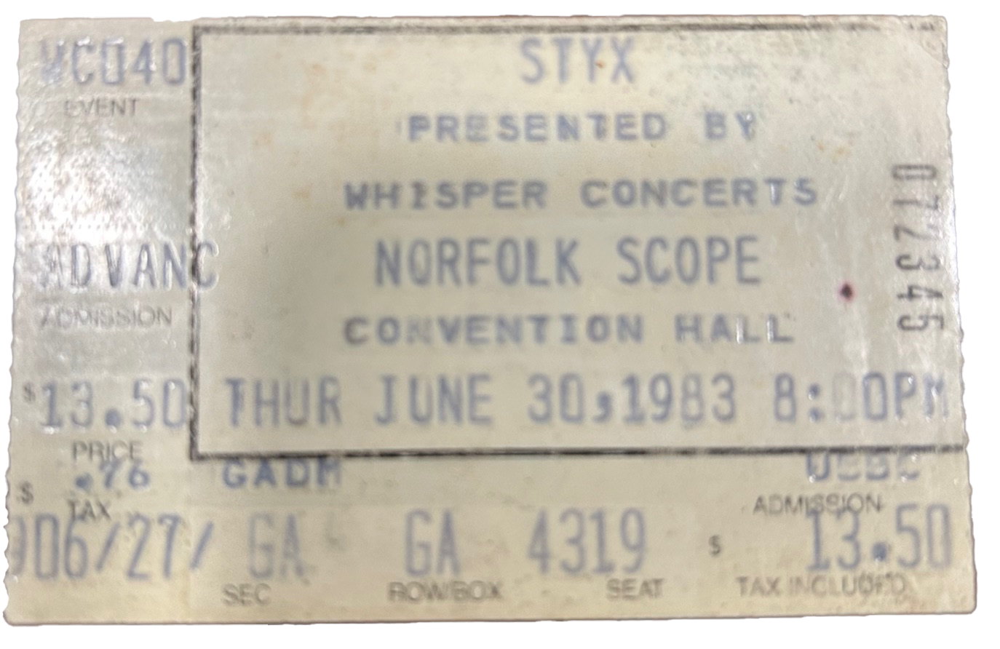
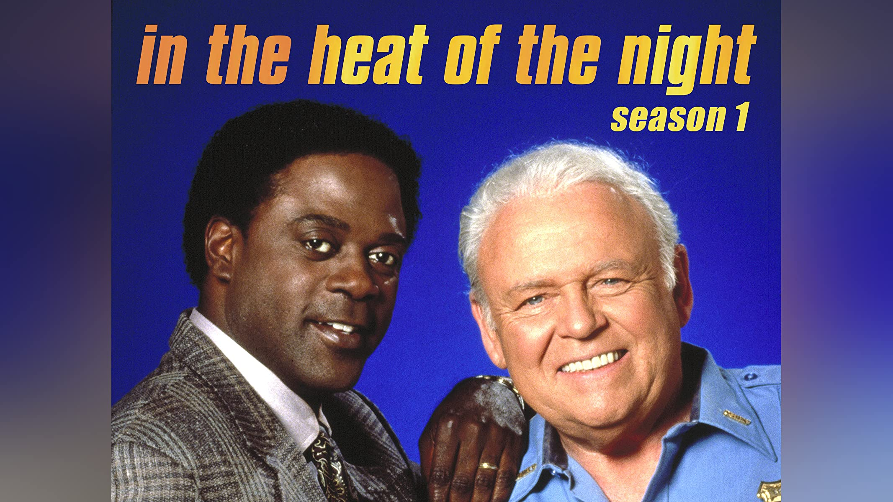
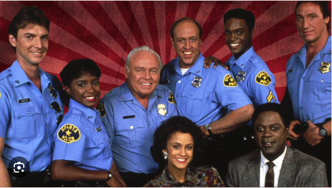

Hello Everyone, I grew up in Northern New Jersey as the youngest of four in the 1970's and 1980's. I played baseball and basketball and ran cross county as a kid and enjoyed that very much. I even ran cross country in college and did well with that also.
I rode my bike, played stick ball or wiffle ball with friends, went fishing, swam, saw a movie at the Rockaway Mall and loved trick or treating with friends at Halloween. I in later adult years lived on my own in New Jersey, Pennsylvania, and even in Florida and Maryland as well. I have visited a bunch of cool places around the world and met a lot of interesting people.
My name is Billy and these are some of my Favorite Things ...
...It is very nice to meet you!
...It is very nice to meet you!
Even though I am a casual Hockey Fan (Go Washington Capitals, Stanley Cup Champs in 2018! 😀 🏒), this is my favorite movie I do believe. If someone says to me, what are your favorite movies? I will mention Miracle first for sure. It was such an inspirational true story from 1980 as I was nine and still remember the USA Team winning. Plus I am a big fan of Kurt Russell so that helps too!

Miracle is a 2004 American sports film directed by Gavin O'Connor and written by Eric Guggenheim. It is about the U.S. men's ice hockey team, whose gold medal victory in the 1980 Winter Olympics over the heavily favored seasoned Soviet team was dubbed the "Miracle on Ice". Kurt Russell stars as head coach Herb Brooks with Patricia Clarkson and Noah Emmerich in supporting roles. (From Wikipedia)
The Pittsburgh Steelers (American Football) and the New York Yankees (Baseball). Their stadiums below.

I've been a Steelers fan since I was eight years old and my favorite player is Quarterback Terry Bradshaw (1970-1983). The Yankees have won 27 Championships since 1903 and I became a fan of theirs because of my parents when I was little. Center fielder Bernie Williams is my favorite Yankee (1991-2006).

My first ever Rock Concert I saw in person (above) was on June 30, 1983 in Virginia. It was at the then Norfolk Scope Convention Hall in Norfolk. The band was Styx. It was the "Kilroy was Here Tour" and I went with my parents and my older brother and sister. I was 13. In those days they had General Admission seating which meant you were allowed to "upgrade" your ticket by running up to the stage as fast as you could to beat the other fans who wanted to get as close as possible too. We were on the front row standing, in the middle part of the stage during this awesome concert.
Band members were Dennis DeYoung, Tommy Shaw (from 1975), James "J.Y." Young, and brothers Chuck and John Panozzo. (pictured here)
The main cast of In the Heat of the Night had great actors like Carroll O'Conner, Howard Rollins, Alan Autry, Ann-Marie Johnson, David Hart, Geoffrey Thorne, Crystal Fox and Hugh O'Conner.


In the Heat of the Night was an American police procedural crime drama television series loosely based on the 1965 novel by John Ball and the 1967 film directed by Norman Jewison. The TV series starred Carroll O'Connor as Southern police chief William "Bill" Gillespie and Howard Rollins as Philadelphia police detective Virgil Tibbs. The series was broadcast on NBC from March 6, 1988 to May 19, 1992, before moving to CBS, where it aired from October 28, 1992 to May 16, 1995. (From Wikipedia)